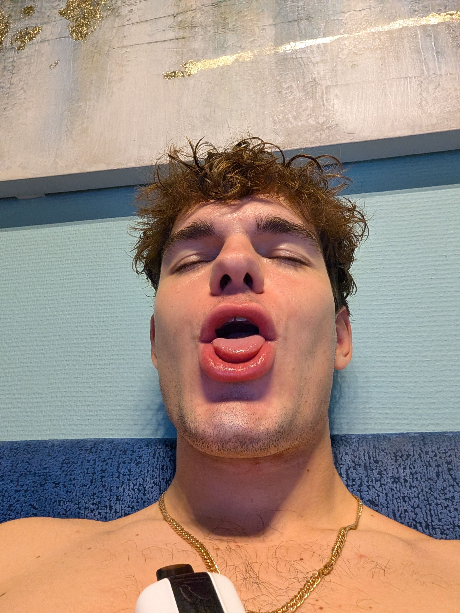

Я пишу это здесь, потому что мои слова сейчас важны, а твоя улыбка — это самое ценное, что у меня есть. Я знаю, что совершил глупость, и мне ужасно больно от мыслей, что я заставил тебя грустить.
Мне просто нужно было немного побыть одному и перезагрузиться, но я ушел в себя слишком резко и глупо тебя обидел. Мне очень жаль, что моё желание побыть наедине с мыслями принесло тебе боль. Ты ни в чем не виновата.
Мы ведь с тобой — самая лучшая пара, и то, что есть между нами, слишком ценно и уникально. Мы идеально дополняем друг друга, и никакие глупые недопонимания не должны вставать на нашем пути.
Прости меня, пожалуйста. Давай оставим эту часть позади и будем двигаться дальше, ведь вместе мы можем всё. Я сделаю всё возможное, чтобы ты снова улыбалась каждый день!

Ты — моя судьба, и я невероятно счастлив, что мы вместе. ❤️